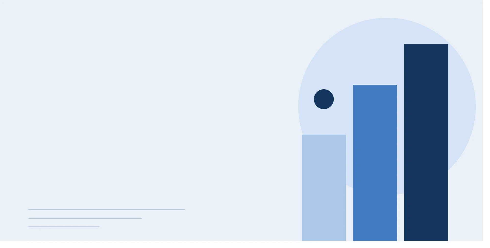
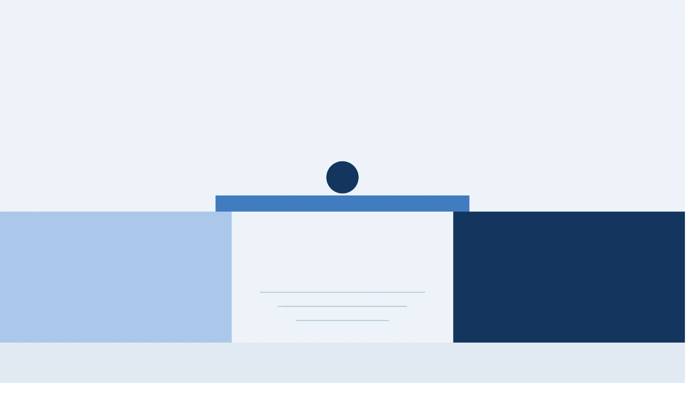
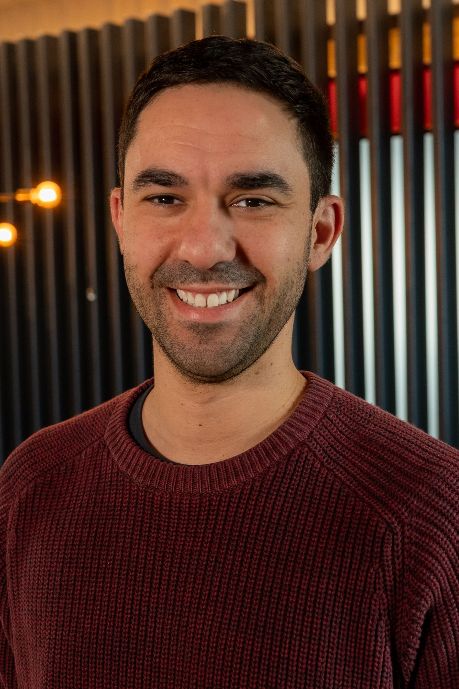

Fractional Product Lead
for Early Stage Start Ups

I help start ups validate, launch, and scale their products
Product needs an owner. Just not a full time one yet
Founders wear a lot of hats, and product is often the one that slips. You may have solid product instincts but no time to give the function the attention it deserves. Maybe someone on your team has product experience, maybe not. Either way, you're in between founder-led product and a full-time product hire.
I'm the product lead you can hand things off to. I turn your vision into clear priorities for the team, make the day-to-day product calls, and keep cross functional teams moving together.
You get your time back for the rest of the business. Clients hire me to:
- Launch a first product: Turn your vision into a scoped first version and get it in front of real users.
- Test a new product line: Validate demand and fit before you commit to a full-time team.
- Navigate a pivot: Set new priorities and a clear plan so the team keeps shipping while the business model changes.

About Nick

I help early stage founders hand off product with confidence. I've spent 12+ years in product across ecommerce, healthcare, fintech, and crypto, building everything from external APIs and warehouse management systems to developer platforms. I found product at Jet.com in 2014, stepped up to lead a team of five engineers within a year, and have since joined four early stage companies full time, including two that were acquired: Jet.com by Walmart and Bison Trails by Coinbase, and consulted more fractionally.
I'm scrappy, empathetic, and quick to learn a new industry. I do my best work with small and mighty teams because tight constraints force sharper focus and more creative solutions. Nick lives in Austin, Texas and is currently learning how to draw and paint (and he's enjoying being really, really bad at it).